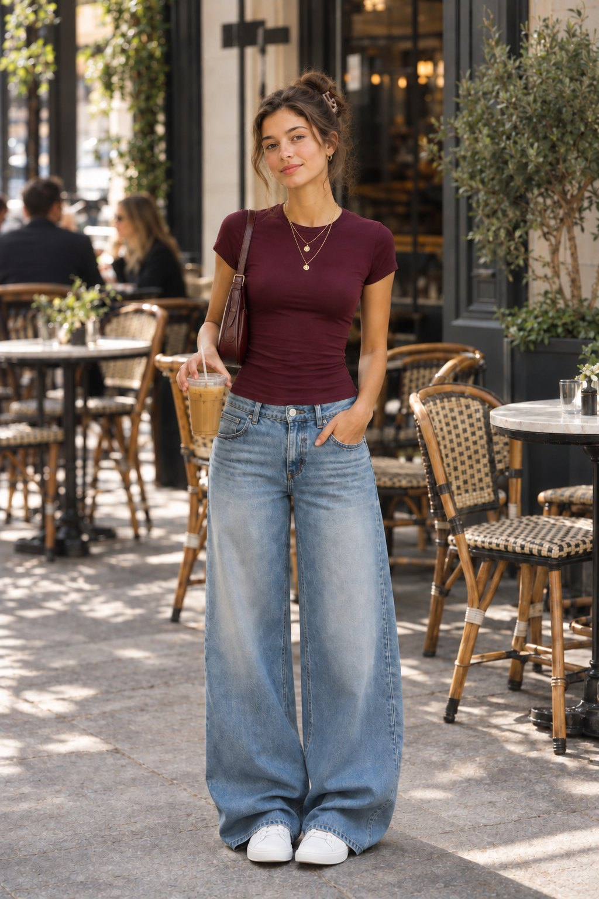
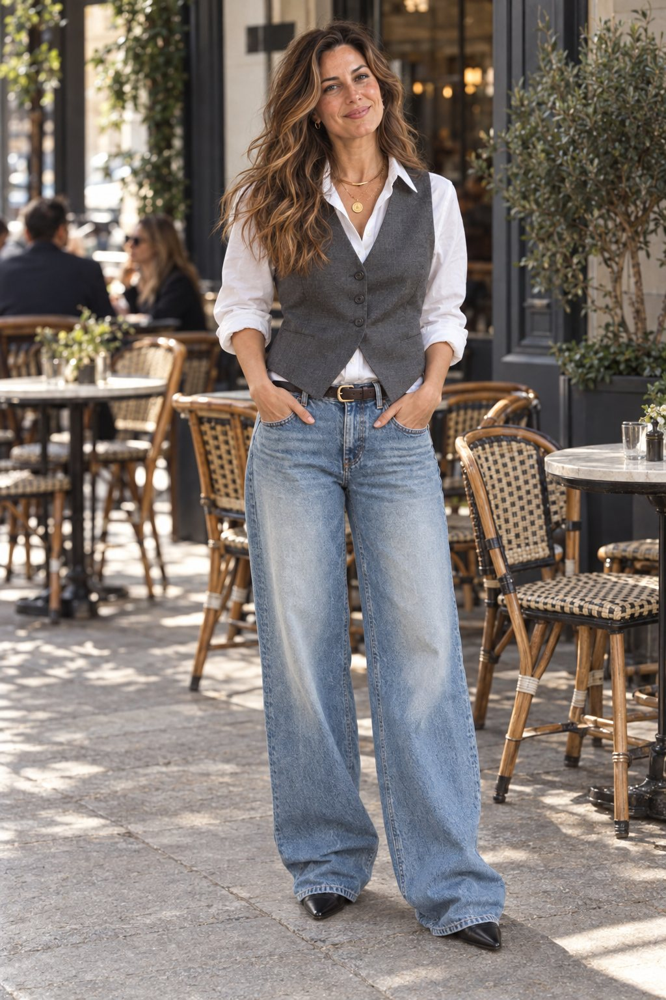

The jeans stay the same. Everything around them changes.
Wide-leg jeans work in your twenties and they work over forty. What changes is everything you wear with them: the top, the shoes, where the waist sits, how finished the look is. One pair of jeans, styled twice.
Light wide-leg jeans
Lunch out
In your twenties

Over forty

The top
In your twenties: Keep it short and fitted, and leave it out.
Over forty: Tuck a crisp shirt in and layer a waistcoat over it.
The waist
In your twenties: Skip the belt and let the jeans sit loose.
Over forty: Mark it with a slim leather belt.
The shoes
In your twenties: White trainers, for an easy line.
Over forty: Pointed flats, for a sharper one.
The finish
In your twenties: Hair up and a small shoulder bag keep it light.
Over forty: Hair down and fine gold jewellery add polish.
What makes the difference
In your twenties the jeans set the tone: loose and easy. Over forty, the outfit sets it. A tucked-in shirt, a marked waist and a sharper shoe make the same wide leg look deliberate and finished.
Test page with one pair. The pictures are made with AI; the jeans are a real product. The styling notes are for Metka to confirm.